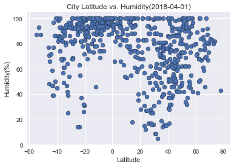

As we can see in the scatter plot, there is no correlation between the latitude and the cloudiness
This means that cloudiness can be present or not in any latitude without a defined pattern affected by the specific city location.
| Visualizations | |
|---|---|
|
 |
|
|